如何有效率地訓練孩子邏輯 分析 推理等綜合能力
並奠定程式設計的數學基礎？
～答案是：組合學～
許多參與獵豹PK課程的家長常提出一個問題：
獵豹為何在小學資優課程就引入組合學？
參加過美國AMC8考試的孩子都得面對排列組合、計數、遞迴、離散機率等問題，然而這些組合學內容在台灣一直屬於高中教材，且是台灣學生的「大軟肋」！
難道美國學生在國中便開始學習組合學了嗎？
不！其實從小學就開始！
近年來美國K-12教育的一個重點改革：從小學階段開始「計算機科學」的教育！
我們都知道程式設計的核心內容是演算法，而其基礎便是「組合數學」！
組合數學起源甚早，西元前6世紀的古印度阿育吠陀醫生妙聞曾指出可以由6種相異味道組合出63種相異結果（每種味道都可以選擇或不選擇，但不能都不選擇，因此有2^6-1=63種組合。）
近代組合學（計數、圖論、代數結構、機率、數理邏輯…）隨著計算機科學日益發展，組合數學越來越熱門！
今年剛出爐的四位費爾茲獎得主，其中有兩位是研究組合學的學者。
學習組合學與其他數學學科（幾何 代數 分析）有一點很大的不同：僅需很少的數學先備知識，便可研究許多非常有趣 且有意義的問題！
（一位建中科學班的老師告訴我，他要在新生中篩選出最有數學天賦的孩子，而要避免學生超前學習影響到檢測的客觀性，採用組合問題是很好的方法）
組合學問題有幾個特色
(1)有趣，常與遊戲或博弈相關，最容易引發學生興趣。
(2)題目富有變化性，不容易使用公式、套路解決，填鴨式教學無法奏效。
(3)「計數、排組、遞迴、機率」問題對訓練與啟發學生「邏輯、歸納、推理、分析、創意」能力有很好的效果。
(4)組合學是對程式設計能力提升最有助益的基礎數學。
許多有天份的孩子，可能對需要長時間訓練才能掌握的數學（幾何、代數）產生挫折感，而「組合學」卻能吸引他們的興趣！（這方面獵豹有很豐富的經驗）
獲得「台灣傑出女科學家獎」的台大新穎材料原子級科學研究中心主任林麗瓊博士曾說過，在就讀北一女高一、高二時數學成績並不算好，但高三時排列組合卻學得很好！
她後來就讀台大物理系，最終成為傑出的科學家。
組合學一直是獵豹數學（PK,J,S,FJ,FS,FA)的重點，也是獵豹課程的特色。
下圖所示範例，摘錄自獵豹國小PK與國中FJ的課程內容。
https://www.facebook.com/groups/695697124716309/permalink/1183789335907083/
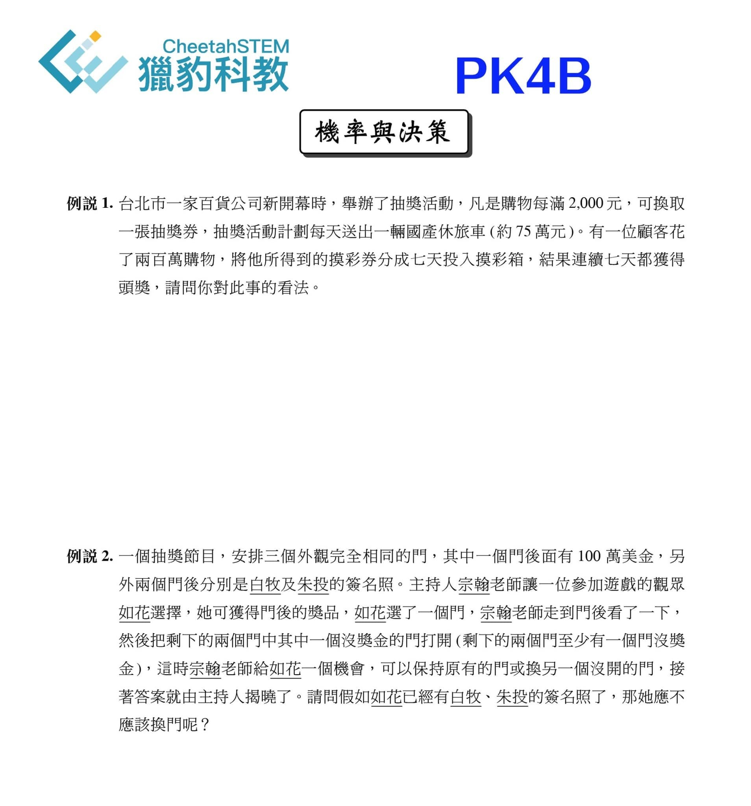
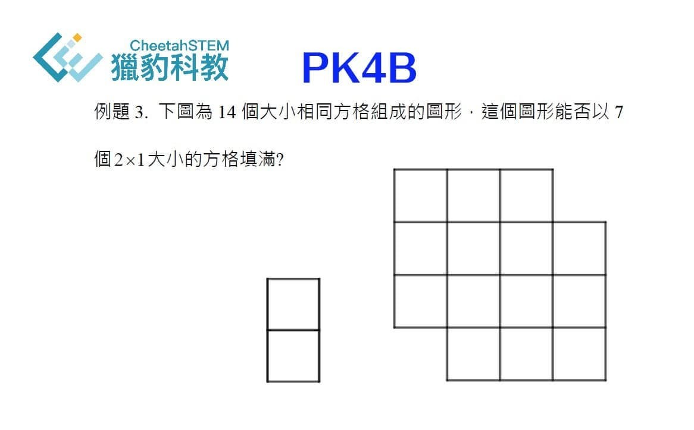
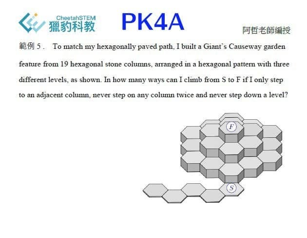
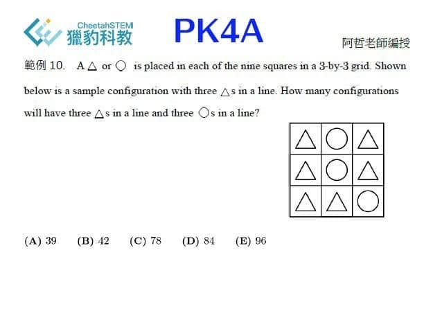
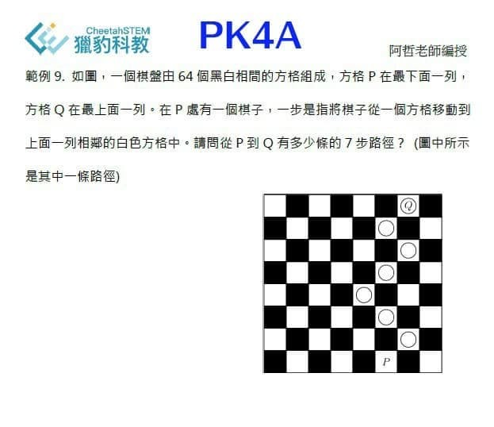
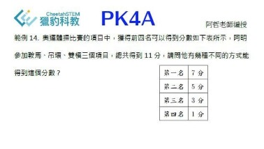
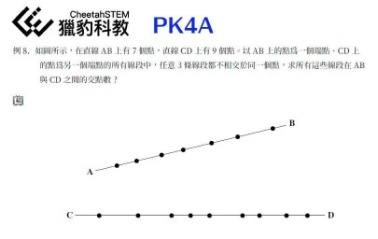
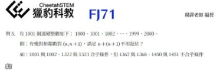
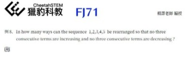
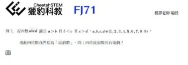
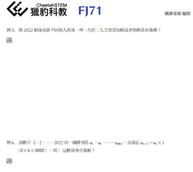
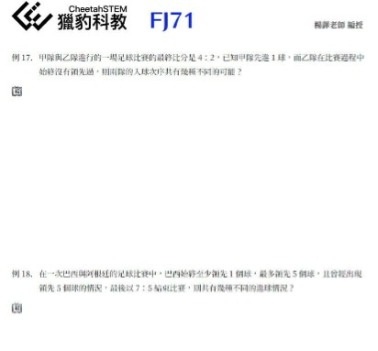
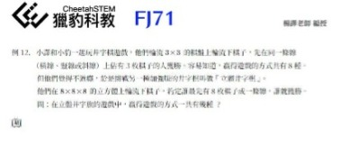
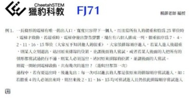